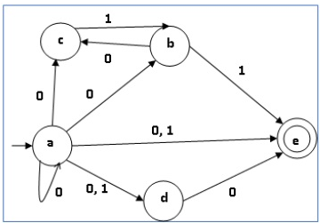
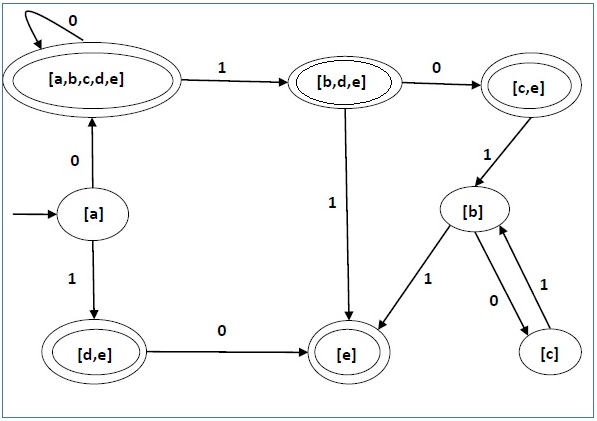

Let X = (Qx, ∑, δx, q0, Fx) be an NDFA which accepts the language L(X). We have to design an equivalent DFA Y = (Qy, ∑, δy, q0, Fy) such that L(Y) = L(X). The following procedure converts the NDFA to its equivalent DFA −
Input − An NDFA
Output − An equivalent DFA
Step 1 − Create state table from the given NDFA.
Step 2 − Create a blank state table under possible input alphabets for the equivalent DFA.
Step 3 − Mark the start state of the DFA by q0 (Same as the NDFA).
Step 4 − Find out the combination of States {Q0, Q1,... , Qn} for each possible input alphabet.
Step 5 − Each time we generate a new DFA state under the input alphabet columns, we have to apply step 4 again, otherwise go to step 6.
Step 6 − The states which contain any of the final states of the NFA are the final states of the equivalent DFA.
|  |  |